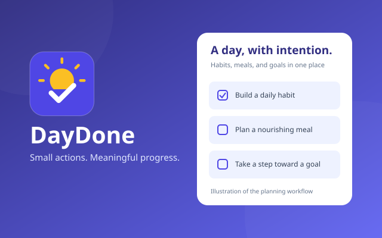

INSTALLABLE APP · PWAProductivityDaily planning
DayDone: Daily Planner
Turn your habits, weekly meals, and longer-term goals into daily tasks you can tick off. Built by me to connect everyday actions with meaningful progress.
- Habits, meal plans & goal-linked actions
- Streaks, progress insights & daily history
- Installable & offline, with backup/restore
Your data stays on your device. Keep a backup before clearing browser data or switching devices.